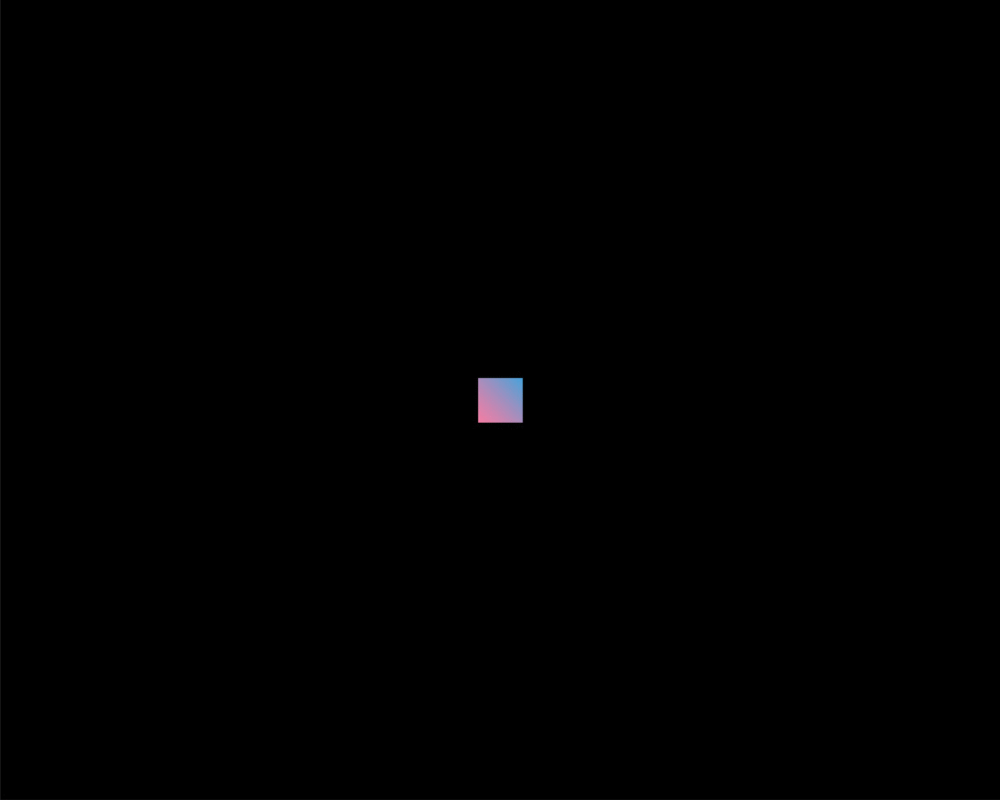

Working in conjunction with Sheila Cheng and Nikhil Misra, I helped create a hypothetical conference called Unfold. The goal of the project was to develop a conference on ethical responsibility and technology. Our group decided to pursue the topic of diversity in the design landscape. We wanted to open up a conversation on the designer’s ethical role and how as designers we can promote and encourage diversity in the discipline of design.
We began by developing an identity system for our conference. We brainstormed names and decided on the term unfold. We thought it was an unexpected term that could represent the idea of open-mindedness and diversity. At this stage, we also brainstormed a location of conference, venue, speakers, activities, and topics.
Once we settled on some of the planning information, we began rolling out some identity concepts. At this phase, we started crafting our own folded letterforms. Typographically, we wanted letters that matched with our concept of unfolding.
One of our goals for this project from the start was to incorporate multiple languages in our conference. Therefore, we designed a website in English and another in Mandarin. The website would house in important information regarding the conference for potential attendees to have access to.
Along with the website, we designed an app that could be used during the conference. The app included the schedule of the day, floor maps of the venue, speaker’s information, and a location for users to access their code and redeem their meals throughout the day.
This was the one of the first projects that I was involved in that required me to wear multiple hats throughout the course of the project. I did lettering, environmental design, graphic design, user interface design, web design, and prototyping. I learned the great value of working with a team and creating a project from scratch and watching it evolve.
Unfold Conference


